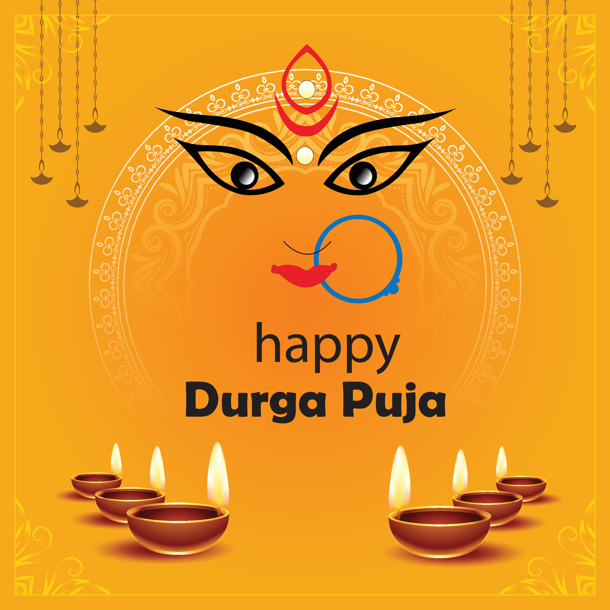

DURGA PUJA

Durga Puja is one of the most significant festivals celebrated primarily in West Bengal, India, honoring the goddess Durga's victory over the buffalo demon Mahishasura. This vibrant festival typically occurs in September or October and lasts for ten days, culminating in Vijaya Dashami. During this time, elaborate temporary structures called pandals are erected, showcasing intricate artistic designs and themes, often reflecting social issues or cultural narratives. Devotees participate in various rituals, including the chanting of hymns, offering of prayers, and immersion of Durga idols in rivers at the end of the festivities. The festival is not just a religious observance; it also serves as a time for family reunions, cultural performances, and traditional feasts, featuring mouth-watering Bengali cuisine. Streets come alive with music, dance, and vibrant processions, creating an atmosphere of joy and unity. Durga Puja symbolizes the triumph of good over evil and fosters a sense of community, bringing people together regardless of their backgrounds. It’s a celebration of art, culture, and spirituality, reflecting the rich heritage of Bengali society. The festival embodies resilience, creativity, and devotion, making it a cherished event that resonates with millions.